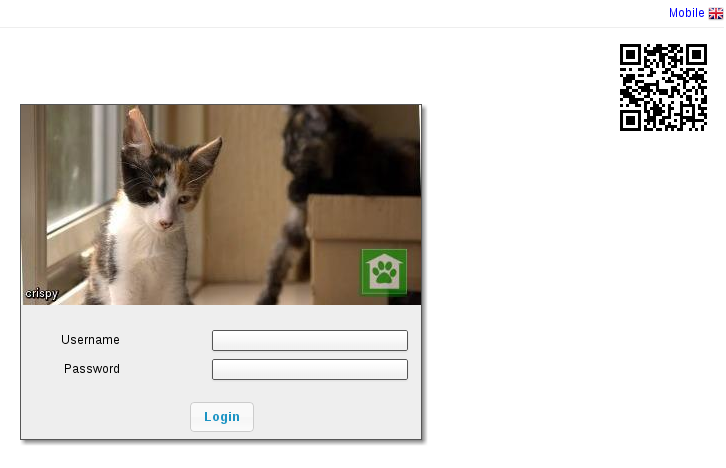
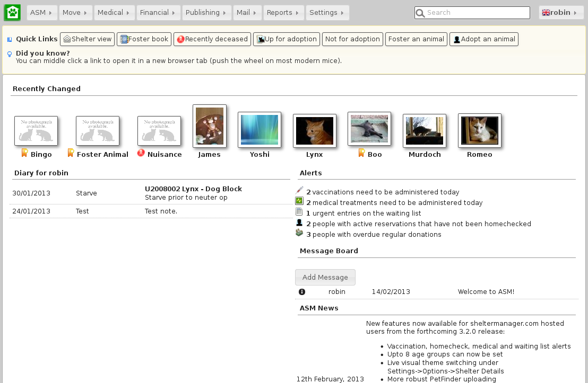

Getting Started¶
On starting ASM for the first time, you will be prompted to log in to the system. The default username is “user” with the password “letmein”. If there are no animals in the database, ASM will remind you of these defaults in the dialog.
Once logged in, ASM’s home screen will appear. Across the top, a menu bar is used to navigate the system.
At the top right, a keyword search box allows you to quickly locate any type of record within ASM and the user menu shows the currently logged in user, the locale and allows user specific actions to be taken (changing the current user’s password, logging out of the system).
The default landing page shows recently changed animals, alerts for any actions that need to be taken, current diary tasks to be performed today, any messages from other users and news from the ASM website. Additionally, this pane will show a series of user-configurable quicklinks for quickly getting to different areas of the system.
Shortcut Keys¶
Some of the most common menu commands can be actioned by pressing combinations of certain keys. These keys are known as shortcut keys or accelerators. Pressing these keys is the same as navigating the menu and clicking on them with the mouse.
If a menu command has a shortcut key, it will be displayed at the side of it in the menu. For example, the Add Animal option on the menu can be accessed by pressing ALT+SHIFT+N - this means you hold down the shift and alt keys together, and tap N. It is worth learning these as you will find them much quicker to use when you are proficient with the system.
There are some additional shortcut keys you can use (some depend on which browser you have):
CTRL+H will return to the home screen
CTRL+S will save the current screen (animal, person details, etc).
CTRL+R or F5 will reload the current screen.
CTRL+W will close the current browser tab
CTRL+A will select all items on screens that display a table with multiple items (eg: Foster book, Vaccination Book, etc).
CTRL+LMB (left mouse button) when clicking a link will open that link in a new tab.
Dates¶

It is worth mentioning early on that Animal Shelter Manager has a keyboard user interface for dealing with dates (as well as the more usual calendar). Every field within the system where a date is expected, the following keyboard shortcuts can be used:
T Today
Y Today + 1 year
M Today + 1 month
W Today + 1 week
D Today + 1 day
SHIFT + (YMWD) Today less 1 year/month/week/day
CTRL + Cursor Keys Move the date selector around (up/down is +/- one week)
CTRL + PgUp/PgDn go forwards and backwards 1 month.
Tables¶

ASM uses tables to display data throughout the application. You can sort any table in ascending order by clicking on the column heading you wish to sort on. If you click the column heading again, it will be sorted in descending order instead. Hold down shift while clicking to sort on multiple columns at the same time.
A system setting allows the table headers to float at the top when you scroll the screen if desired.
In addition, if you need to select any items in a table, tickboxes will appear down the left hand side. Any actions you can take on selected items in a table will be via buttons above the table.
The keyboard shortcut CTRL + A can be used to select all items in the currently visible table.
Initial Setup¶
Before doing anything else with your new ASM installation, you should now perform the initial configuration of ASM for your shelter. The steps are as follows:
If you want to use your own animal classifications, you can use the to alter the standard ASM ones - ASM assumes your shelter deals with dogs and cats and wants to differentiate between stray, feral and abandoned animals. It also has an extra type for boarding, which allows you to generate separate figures for boarding animals. After doing that, select your new defaults in the correct place on the screen.
Go to the screen and enter your shelter’s details. You can set all of the systemwide behaviours for ASM and control the format of generated animal codes from the other tabs on this screen as well.
Go to to setup your available shelter locations. A location can have multiple units, which you list in the “units” box of the location, separated by a comma. Locations can be anything you want - eg: a room, an area of a room, a building. Units are individual areas, pens or cages within that location. For example, you could create a location called “Dog Block A” with units “1, 2, 3, 4, 5” to have 5 numbered pens. When you use shelter view, you can have it group by the location or the location and unit and it will allow you to drag and drop animals between pens and locations to move them around. It will also highlight empty pens so you can see capacity at a glance.
Go to - Remove any unwanted breeds and species from the database that your shelter does not deal with.
Go to and install some reports. The “Select Recommended” button allows you to quickly choose our recommended set for installation.
Create usernames and passwords for all your shelter staff in the screen. Once you have your own username and password, delete the default “user” user. It is advised that everyone has their own username and password rather than using a shared account as it makes it easier to revoke individual permissions or remove the account when staff leave without disrupting everyone else.